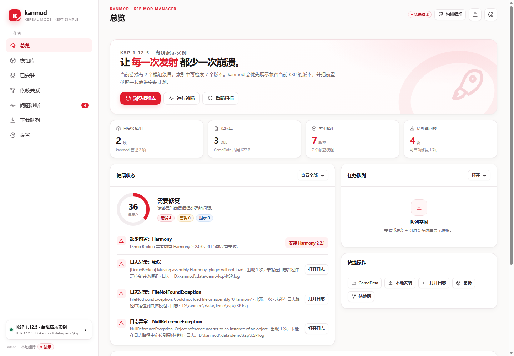
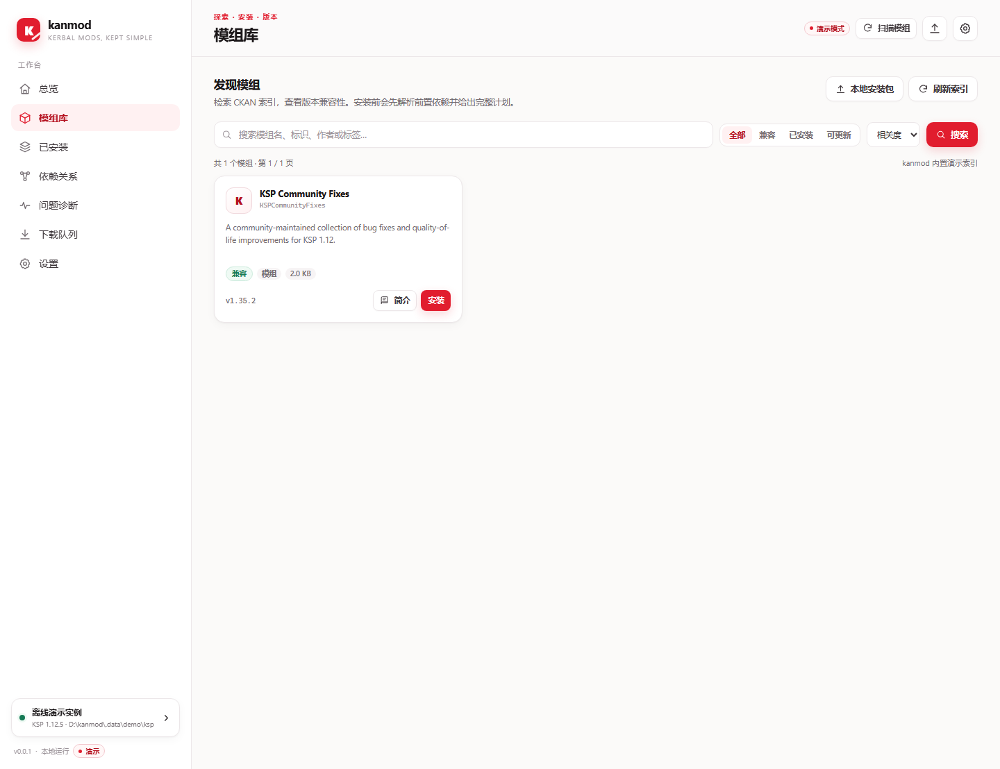

前置自动补齐
递归解析硬依赖、版本范围和虚拟 provides，先装前置，再装目标，顺序不会乱。
kanmod 是坎巴拉太空计划 1 的本地模组管理器。它先替你补齐前置、核对版本，
再读取 KSP.log 把崩溃翻译成人话。点下安装，剩下的交给它。

把 .ckan 元数据、版本约束和游戏日志放在一起看，很多“玄学崩溃”其实都有明确答案。
递归解析硬依赖、版本范围和虚拟 provides，先装前置，再装目标，顺序不会乱。
读取 KSP.log 和 Unity 输出，定位缺失程序集、异常堆栈和重复 DLL，而不是让你猜。
索引直链、镜像前缀、GitHub Releases、SpaceDock 依次尝试，失败记录保留，支持 SHA256 校验。
MULTI-SOURCE更新管理器集中列出可更新项，可勾选或全部更新；已安装页支持批量禁用、启用、删除到回收站，只升级 stable 兼容版本。
BATCH WORKFLOW自动翻译英文模组标题与简介，标签使用本地词典；完整说明按需翻译。结果缓存到本地，离线演示也有内置中文。
ZH-CN TRANSLATION配置 API Key 后检索 KSP 项目，查看封面、截图与说明；标题和说明自动翻译，详情页可直接跳转项目页。
CURSEFORGE检测到 KSP 实例后，从顶栏直接启动游戏，不用再翻目录找可执行文件。
LAUNCH KSP导出已安装清单为 .ckan 模组包，导入后生成安装计划；下载、图片、翻译缓存可查看并一键清理。
MODPACK / CACHE只监听 127.0.0.1，API 带启动令牌；索引、下载、翻译缓存都在你自己的电脑上。
安装失败、游戏闪退、模组不生效——kanmod 会把依赖关系、版本约束和日志堆栈放在同一张诊断桌上。 能安全修复的直接给出修复计划，不能自动处理的明确标出来。
找到满足版本约束的包，自动加入安装计划。
默认只选择兼容版本，警告和未知版本需要你确认。
按错误签名聚合，关联到具体模组和文件路径。
跨 GameData 检测同名程序集，指出冲突来源。
[LOG 21:04:12] [ERR] Missing assembly Harmony
[LOG 21:04:13] [EXC] FileNotFoundException: Could not load file or assembly '0Harmony'
[LOG 21:04:14] [WRN] [DemoBroken] plugin will not load: dependency missing
[LOG 21:04:15] [LOG] Scene load: MAINMENU
kanmod 读取 .ckan 的 depends 字段，沿着依赖图递归找到所有必需模组，
再根据你的 KSP 版本挑选兼容版本。你看到的是安装计划，不是一堆需要手动搜索的名字。
白底红点缀，中文界面。总览先告诉你哪里有问题，再给你下一步动作。

安装包自带运行环境，不需要 Node.js，也不需要打开命令行。程序、运行环境和数据都保存在安装目录，默认优先选择非 C 盘。
下载 kanmod-setup-0.0.71.exe，默认安装到非 C 盘的 Programs\kanmod，也可自选目录。
桌面快捷方式会启动本地服务并自动打开界面。
kanmod 会扫描 Steam 库；也可以直接选择包含 GameData 的目录。
开始菜单的“更新 kanmod”会检查并安装新版本，保留安装目录中的模组与数据。
开始菜单的“卸载 kanmod”会停止服务，并删除安装目录与全部数据。
903d9219ac5164a36d5989e2ca4cbb5875d96f6d20ba0021e99b8ad6049f2f7f
不需要。Windows 安装包已经包含运行环境，安装后直接启动 kanmod.exe。从源码运行才需要 Node.js 20.11+。
支持。kanmod 会扫描常见 Steam 库和安装目录，也可以手动选择任何包含 GameData 的 KSP 1 目录。
覆盖前会备份，写盘失败会回滚；卸载是把文件移动到回收站，而不是直接删除。仍然建议你在大规模安装前备份存档。
请从桌面或开始菜单重新打开 kanmod，不要访问旧的端口地址。仍失败时运行 kanmod.exe --stop 后再启动；日志在 %LOCALAPPDATA%\kanmod\data\launcher.log。
优先使用本地缓存和内置演示翻译；需要联网时调用 Google / MyMemory 公开翻译端点。机器翻译仅供参考。
目前只支持 KSP 1。KSP 2 的目录结构和模组生态不同，不在当前版本的范围内。
下一次点火，别再和前置依赖较劲。
下载 kanmod 0.0.71